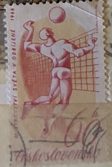
| SOURCE | TITLE| IMAGE MATCH | click to source page |
| lastdodo.com | World Volleyball Championships 60 (1966) - Czechoslovakia - LastDodo | 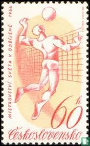 |
| eBay | EBS Czechoslovakia 1966 - World Volleyball Championships - 1596-1597 MNH** | eBay | 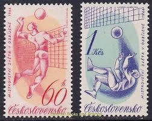 |
| eBay | Volleyball Czech & Czechoslovakian Stamps for sale | eBay | 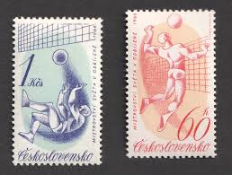 |
| Alamy | Postage stamps czechoslovakia hi-res stock photography and images - Page 3 - Alamy | 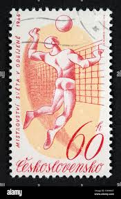 |
| Delcampe | Volleyball - CZECHOSLOVAKIA 1596-1597,unused,volleyball | 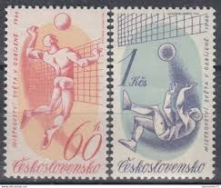 |
| Dreamstime.com | Volleyball editorial image. Image of retro, pyongyang - 111854500 | 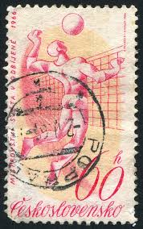 |
| postbeeld.com | Stamp 1966, Czechoslovkia W.C. Volleball 2v, 1966 - Collecting Stamps - PostBeeld - Online Stamp Shop - Collecting | 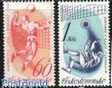 |
| Todocolección | checoslovaquia 60 h. josef lada año 1970. - Buy Stamps from other European countries on todocoleccion | 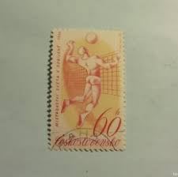 |
| lastdodo.com | World Volleyball Championships (1966) - Czechoslovakia - LastDodo | 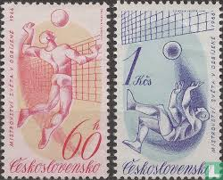 |
| eBay | French Polynesia Scott #C49 Mint Hinged | eBay | 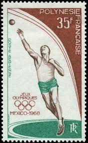 |
| eBay | Basketball Italian Stamps for sale | eBay | 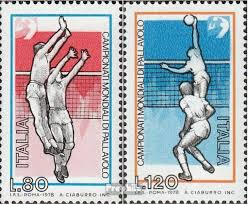 |
| BidCurios | Czechoslovakia - Used Stamp - 1964 Sports Events of 1964 - World Handball Championship - (B-002/P3)m - BidCurios | 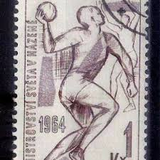 |
| China - Volleyball on stamps theme, 1965. | 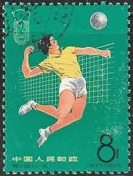 | |
| Shutterstock | 116+ Thousand Retro Ussr Royalty-Free Images, Stock Photos & Pictures | Shutterstock | 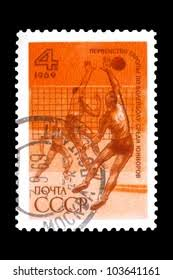 |
| Shutterstock | Czechoslovakia Circa 1966 Stamp Printed Czechoslovakia Stock Photo 91784606 | Shutterstock | 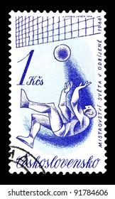 |
| HipStamp | Romania 1963 - FDI - Scott #1575 | Europe - Romania, General Issue Stamp / HipStamp | 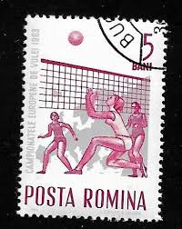 |
| eBay | RUSSIA 3619 - European Junior Volleyball Championships (pb47594) | eBay | 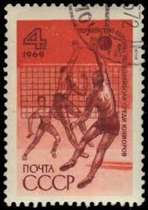 |
| Shutterstock | Vintage Volleyball: Over 1,313 Royalty-Free Licensable Stock Photos | Shutterstock | 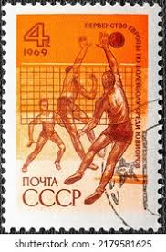 |
| Old-Stamps.com | Lucinda Blackmore, age 6 / 1961 | 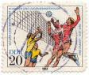 |
| GetArchive | 11 Basketball on stamps of the soviet union, Philately Images: PICRYL - Public Domain Media Search Engine Public Domain Search | 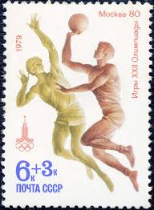 |
| Flickr | italy-world-cup-soccer-stamp-1934 | a bit more info via desi… | Flickr | 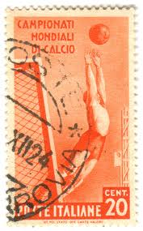 |
| Dreamstime.com | Volleyball editorial stock photo. Image of plant, postage - 195270913 | 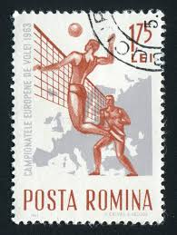 |
| eBay | French Polynesia - 1968 Mexico Olympic Games MNH Sports Stamp (C49) $16 | eBay | 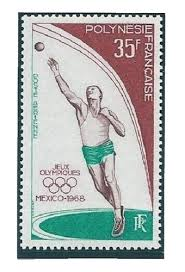 |
| Shutterstock | France Circa 1956 Postage Stamp Showing Stock Photo 69876598 | Shutterstock | 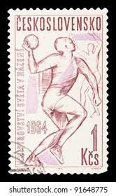 |
| Bridgeman Images | Image of Postage stamp for 1934 FIFA World Cup, 20-cent stamp, Italy, | 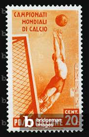 |
| eBay | Vintage 1969 2 Russian Stamps Volleyball | eBay | 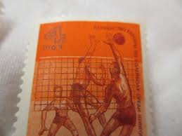 |
| Dreamstime.com | Soviet Volleyball Stock Photos - Free & Royalty-Free Stock Photos from Dreamstime | 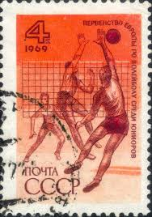 |
| Shutterstock | 7+ Thousand Olympic Gymnastics Athlete Royalty-Free Images, Stock Photos & Pictures | Shutterstock | 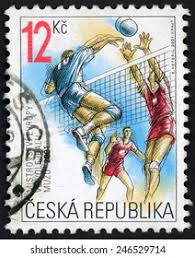 |
| Dreamstime.com | 685 Volleyball Vintage Pictures Stock Photos - Free & Royalty-Free Stock Photos from Dreamstime | 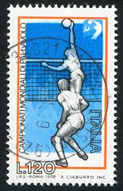 |
| Alamy | DJIBOUTI - CIRCA 1983: stamp printed by Djibouti, shows Volleyball, circa 1983 Stock Photo - Alamy | 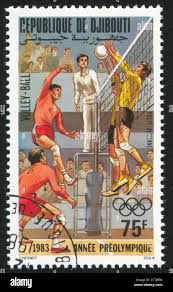 |
| eBay | Finland 1970, Sports For Invalids, Volleyball , MNH | eBay | 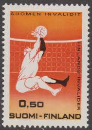 |
| GetArchive | ROM 1995 MiNr5147 pm B002 - public domain postal stamp scan - PICRYL - Public Domain Media Search Engine Public Domain Image | 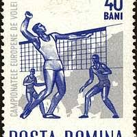 |
| eBay | Saint Pierre And Miquelon 643 ** MNH The Volleyball Year 1997 | eBay | 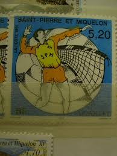 |
| lastdodo.com | Antonio Ciaburro [1951] Stamp catalogue - LastDodo | 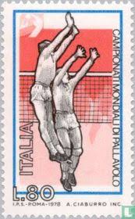 |
| Shutterstock | Ceskoslovensko Circa 1963 Post Stamp Printed Stock Photo 170196770 | Shutterstock | 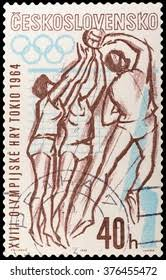 |
| BalkanAuction | 1978. Italy. Men's Volleyball World Cup. | Postage stamps | Philately | BalkanAuction | 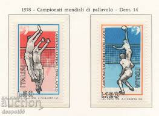 |
| eBay | F-EX48220 ITALY MNH 1978 WORLD CHAMPIONSHIP OF VOLLEYBALL. | eBay | 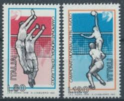 |
| buyhungarianstamps.com | 918-923 Yugoslavia - 1968 Summer Olympics, Mexico City (MNH) – Eastern Europe Postage Stamps | Hungaria Stamp Exchange | 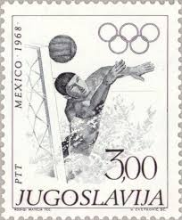 |
| GetArchive | Stamp of Finland - 1986 - Colnect 47112 - Police - Justice Building Hamina 1984 - PICRYL - Public Domain Media Search Engine Public Domain Image | 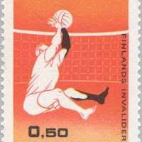 |
| Free stamp catalogue | Stamps from Slovakia - Freestampcatalogue.com - The free online stampcatalogue with over 500.000 stamps listed. | 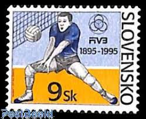 |
| eBay | 1969 Volleyball,European Championships,sport,Russia,3646,MNH | eBay | 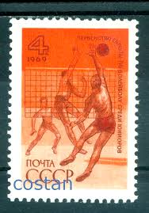 |
| Shutterstock | 1+ Thousand Ginocchio Varo Royalty-Free Images, Stock Photos & Pictures | Shutterstock | 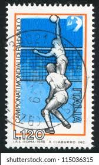 |
| Wikimedia.org | File:The Soviet Union 1971 CPA 4012 stamp (Athletics. Discus Throw and Running) cancelled.jpg - Wikimedia Commons | 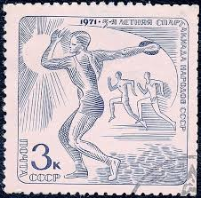 |
| Wikimedia.org | File:Soviet Union stamp 1956 Spartakiada.jpg - Wikimedia Commons | 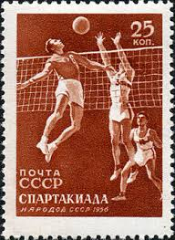 |
| Dreamstime.com | Sporting Events at the School of the Kaluga Region in Russia. Editorial Photography - Image of events, russian: 70316947 | 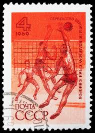 |
| eBay | Volleyball Russian & Soviet Union Stamps for sale | eBay | 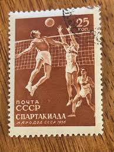 |
| Dreamstime.com | Pants Volleyball Stock Photos - Free & Royalty-Free Stock Photos from Dreamstime | 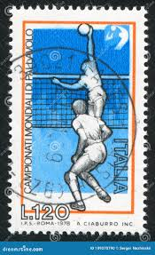 |
| eBay | Poland block65 (complete issue) used 1976 olympic. Summer, Mont | eBay | 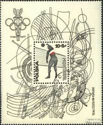 |
| Osta | Soome_212 1970 invasport võrkpall MNH (247174497) - Osta.ee | 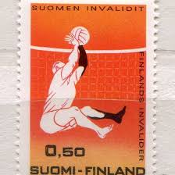 |
| Shutterstock | 7+ Hundred Czechoslovakia Ussr Royalty-Free Images, Stock Photos & Pictures | Shutterstock | |
| stamprussia.com | Russian Topical Stamps: BASKETBALL | |
| Dreamstime.com | Skier at Downhill in FIS Alpine World Ski Championships 1962 at Chamonix in Haute-Savoie Editorial Image - Image of hobby, aged: 191817840 | |
| Stampedia | stampedia CZECHOSLOVAKIA STAMP catalog | |
| eBay | Finland 496, MNH. Michel 676. Handicapped volleyball player, 1970. | eBay | |
| eBay | Germany Berlin 1981 ** Mi.664/65 Sporthilfe Sports Volleyball Sprint | eBay | |
| Wikimedia.org | File:The Soviet Union 1971 CPA 4015 stamp (Basketball) cancelled.jpg - Wikimedia Commons | |
| Media Storehouse | 1978 FIVB Volleyball World Championship Italian Postage Stamp Print. Art Prints, Posters & Puzzles from Fine Art Finder | |
| Dreamstime.com | Centennial olympic games editorial stock photo. Image of centennial - 26650878 | |
| Wikipedia | Arkivo:The Soviet Union 1971 CPA 4015 stamp (Basketball).jpg - Wikipedio |
_cancelled.jpg){kind=link}
{kind=link}
_cancelled.jpg){kind=link}
.jpg){kind=link}